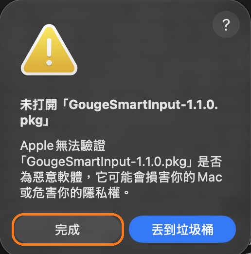
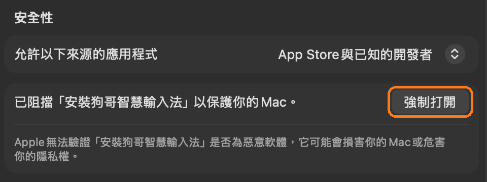
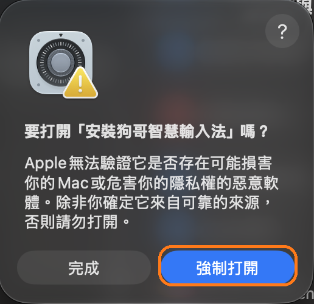

整句組字
打完後面的字，前面猜錯的會自己改過來，不用一直選字。
明天要不要去夜市吃雞排
待辦事項
明天
打完後面的字，前面猜錯的會自己改過來，不用一直選字。
中文裡直接夾打英文，打一半就有建議，大小寫也幫你寫對。
打開頭兩個字，按 Tab 補完。按錯鍵或ㄣㄥ不分，也能按 Tab 修正。
組字都在你的 Mac 上完成。只有使用狗哥小幫手並按下送出時，才會把視窗裡的文字傳到你填的 AI 服務；接本機 Ollama 就留在本機。詞庫要等你自己打開 iCloud 同步，才會放到你的 iCloud。
每週到 GitHub 檢查一次更新，不會傳送你打的字，也可以關掉。當機回報要你看過內容才會送出。
選取文字後連按兩次 Option，請狗哥改寫語氣、翻成英文、修正錯字或解釋詞。
明天的會議我可能來不及參加
可連接自己的 AI 服務，或使用本機 Ollama。
到偏好設定「進階」打開，可以替牠取名字。小狗只看你什麼時候按鍵，和最後打出的幾個字裡有沒有牠的名字，這幾個字只留在記憶體裡，不會存下來。睡覺時不會重畫，不會一直耗電。
睡著了，打幾個字叫醒牠
打開後雙擊「安裝狗哥智慧輸入法」，照畫面按下一步。
選寫程式、文書、打遊戲或聊天，狗哥幫你調好設定。
狗哥是個人開發的免費軟體，沒有付費請 Apple 公證，macOS 對這類軟體都會顯示這個訊息。照下面 3 步打開，只要做一次，之後狗哥會自動更新。



brew tap qso71/gouge https://github.com/qso71/gouge-smart-input-releases brew trust qso71/gouge brew install --cask gouge-smart-input